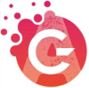

|  | |

Source: image generated by Joeythemonster/anything-midjourney-v-4-1
Prompt: “A robot illusion walks towards the expansive galaxy of the universe”
Portfolio of AI Instances
COMP712: Classical Artificial Intelligence
Dr Daniel Zhang
Games Academy, Falmouth University
v 0.1 (2023-2024)
Table of Contents
Introduction
Artificial Intelligence (AI) plays a crucial role in nearly all types of games, with various genres relying on advanced AI techniques. The application of AI extends to the control of non-player characters, presenting diverse challenges based on the game type. For instance, enemy AI in a realistic stealth game differs significantly from that in an arcade shooter, which, in turn, varies from a racing game. Additionally, AI finds applications in adversaries within board, card, or strategy games, procedural content generators, procedural narrative engines, assistive technologies, AI “directors,” and numerous other areas.
For this assignment, your objective is to design and implement a portfolio featuring two demonstration applications or game components, each incorporating one or more AI techniques. This portfolio of AI instances is designed to highlight the breadth and depth of your knowledge in AI techniques and applications. These instances will exemplify two distinct categories of AI technology:
- Authored behaviors
- Computational intelligence
The format of these instances is flexible and can be tailored to your preference. They could be standalone, purpose-built demo applications, or components integrated into larger, existing projects. Whether they take the form of playable game experiences, non-interactive demonstrations, or tools designed for game developers (either standalone or integrated into a game engine) is entirely up to you. They might be individual works or components of a unified artifact. The implementation can leverage various technologies, programming languages, platforms, and third-party libraries deemed suitable. However, it is essential that they showcase your understanding of the employed AI techniques and demonstrate your capability to develop robust and maintainable software systems.
Assignment Breakdown
This assignment is divided into various sections:
- Proposal for First AI Instance (not assessed)
- Compose a concise one-page proposal for the initial AI instance, covering:
- Concept overview
- Key requirements
- Identification of the AI technique(s) to be implemented
- Implementation of First AI Instance
- Develop a preliminary version of your first AI instance.
- and 4. Proposal and Implementation for Second AI Instance
- Repeat the process outlined in 1-2 for the second AI instance.
- Final Version of AI Instances
- Enhance and finalise both AI instances, addressing:
- Revisions based on feedback from the tutor and/or peers
- Practical Demo Presentation
-
Conduct a practical demonstration of the AI instances for your tutor, ensuring:
- Evident academic integrity
- Demonstration of individual programming proficiency, understanding of AI techniques, and effective communication skills
Note: You are encouraged to write proposals for both AI instances, although they will not be formally assessed. Planning your projects in advance and seeking feedback from both the tutor and peers is considered good practice.
Assignment Guidelines
This programming task does not come with a predefined GitHub repository. You are expected to utilise version control, selecting the platform and repository that best suits your project. Remember to adjust the .gitignore file (or its equivalent in other version control systems) to exclude temporary build files from the repository.
Submission Structure
-
Formative Submissions
- There are two formative submissions throughout the assignment.
- After each formative submission, anticipate feedback from both peers and the module tutor.
- Workshop sessions will also provide additional feedback.
- Incorporate received feedback into subsequent prototypes.
-
Summative Submission
- The final submission consolidates your work.
- Ensure compliance with university policies on late or non-submission, as outlined in the course handbook.
- Meeting all formative deadlines is crucial, as failure to submit the final work via LearningSpace by the summative deadline will incur penalties.
Note: Always refer to the course handbook for comprehensive details on university policies and guidelines.
Project Implementation Guidelines
-
Scope and Feasibility
- Avoid underestimating the effort required for even seemingly simple software; carefully consider project scope from the proposal stage.
- Evaluate feasibility to ensure realistic expectations.
-
Functional Coherence
- Assess code based on functional coherence, measuring how well the final product aligns with user stories and identifying any obvious bugs.
- Maintain a balanced implementation; both introducing features not in the design and neglecting planned features are discouraged.
-
Sophistication and Appropriateness
- Implement appropriate algorithms, data structures, libraries, and object-oriented programming concepts.
- Emphasise task-specific solutions; simplicity is preferred over unnecessary complexity.
- When using engines like Unity or Unreal, leverage built-in AI functionality rather than creating redundant solutions without justification.
-
Maintainability
- Prioritise maintainability even in an individual project. Adhering to some maintainability guidelines lays the foundation for a codebase that is easy to understand, modify, and extend. This approach ensures that future iterations or collaborative efforts can seamlessly build upon the existing work.
- Enhance code comprehension with extensive comments, following a recognised commenting convention such as Doxygen.
- Select clear and consistent names for files, classes, functions, and variables.
- Ensure a sensible and consistent formatting style, including indentation, whitespace, and curly brace placement.
- Avoid hard-coded literals; define values as constants in a central location.
- Expose values as properties or variables in the Unity or Unreal editor for easy adjustments without altering the source code.
-
Visual Scripting Systems (e.g., Blueprints)
- Maintain tidy Blueprints that clearly represent the flow of control and data.
- Utilise grouping, macros, functions, and routing nodes for readability.
- Disorganised Blueprints may affect the assessment negatively.
-
Creativity and Innovation
- Exhibit creativity and innovation befitting Falmouth University’s reputation as a world-leading arts institution.
- Encourage divergent thinking to explore a multitude of possible solutions.
- Embrace subversive ideas that intentionally deviate from conventional or obvious solutions.
Note: Please refer to the marking rubric for more detailed information regarding the criteria.
Marking Rubic
| Criteria | Weight | Near Pass | Pass | Merit | Distinction |
|---|---|---|---|---|---|
| Choice of Concept | 20% | Choice of projects is inappropriate to demonstrate the required AI techniques Scope of projects is either too trivial or too ambitious for the time and resources available Project concepts are uncreative and untagging |
Choice of projects is appropriate to demonstrate the required AI techniques Scope of projects is appropriate for the time and resources available Project concepts are somewhat creative and engaging |
Choice of projects is highly appropriate to demonstrate the required AI techniques Scope of projects is appropriate for the time and resources available Project concepts are creative and deliver an engaging experience |
Choice of projects is highly appropriate to showcase advanced knowledge of the required AI techniques Scope of projects is appropriate for the time and resources available Project concepts are exemplary in terms of creative thinking and/or delivery of an engaging experience |
| Functional Coherence | 20% | Few requirements have been implemented and/or the code fails to compile or run Obvious and serious bugs are detected |
Almost off requirements have been implemented There is little evidence of feature creep Some minor bugs are detected |
All requirements have been implemented There is almost no evidence of feature creep Some superficial bugs are detected |
All requirements have been implemented There is no evidence of feature creep No bugs are detected |
| Sophistication | 40% | Little insight into the appropriate use of programming constructs is evident from the source code Solutions show little or no understanding of appropriate AI techniques The program structure is poor or non-existent |
Considerable insight into the appropriate use of programming constructs is evident from the source code Solutions show good working knowledge of appropriate AI techniques The program structure is effective |
Significant insight into the appropriate use of programming constructs is evident from the source code Solutions show extensive up-to-date knowledge of appropriate AI techniques The program structure is very effective There is high cohesion and low coupling |
Extensive insight into the appropriate use of programming constructs is evident from the source code Solutions build upon cutting-edge AI techniques with advances of the student’s own The program structure is extremely effective There is very high cohesion and very low coupling |
| Maintainability | 20% | Code formatting, commenting and structure are ineffective and hinder readability | Code is somewhat consistently formatted Code is adequately commented There is little unnecessary duplication of code or of literal values |
Code is consistently formatted Code is appropriately commented There is no unnecessary duplication of code or of literal values Literal values can be tweaked easily in code, or if appropriate through a configuration file or editor interface |
Code is consistently formatted Code is appropriately and meaningfully commented There may be auxiliary documentation to aid maintenance There is no unnecessary duplication of code or of literal values Literal values can be tweaked easily, and attention has been paid to the appropriate user experience for this |
*The above table was generated on https://www.tablesgenerator.com/markdown_tables
FAQ
-
Q: What is the deadline of this assignment?
A: MyFalmouth system is the only place where you should be able to find all deadline information according to the requirements and the policies of Falmouth University. -
Q: How can I seek help?
A: You can email the tutor for any informal clarifications. For short question, MS Teams message would work as well. -
Q: Will there be feedback on my work?
A: You will be given verbal feedback on your work during the assessment session. Please consider to book an appointment with the tutor if you need in-depth discussions. -
Q: Any other issues?
A: Any other issues or mistakes in this brief, please inform the tutor.